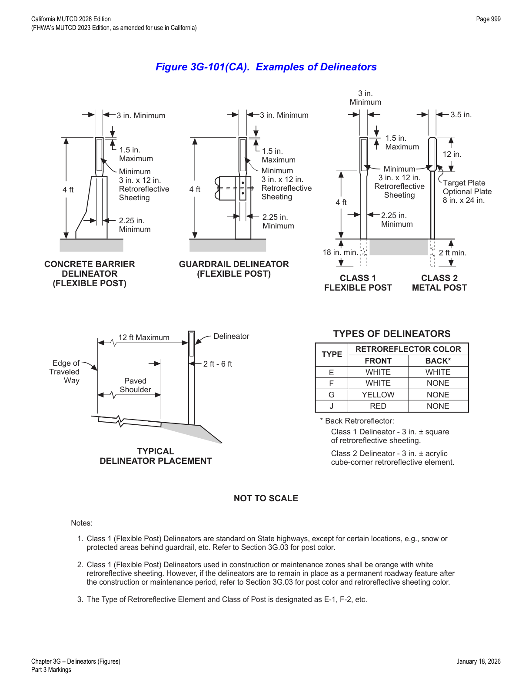
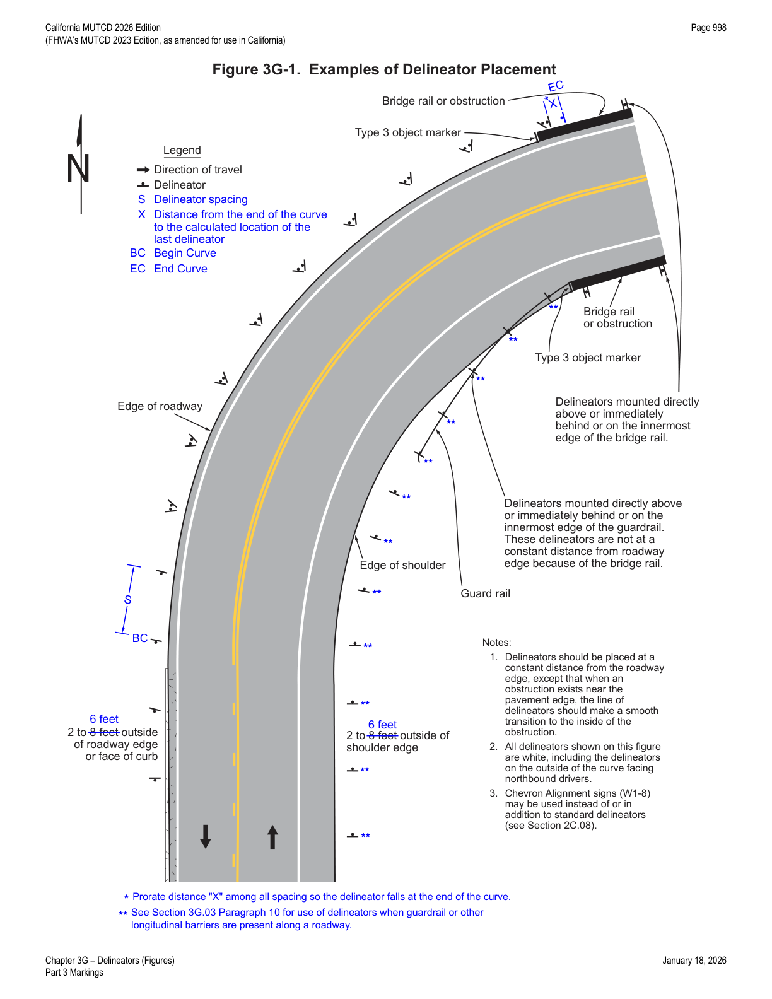
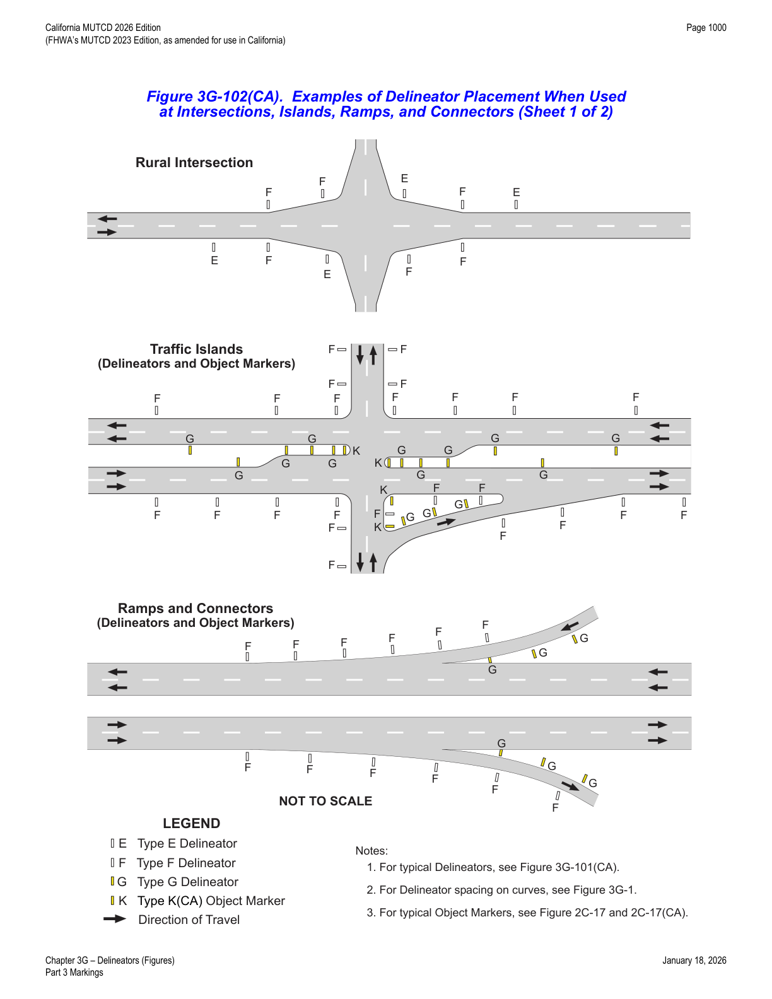
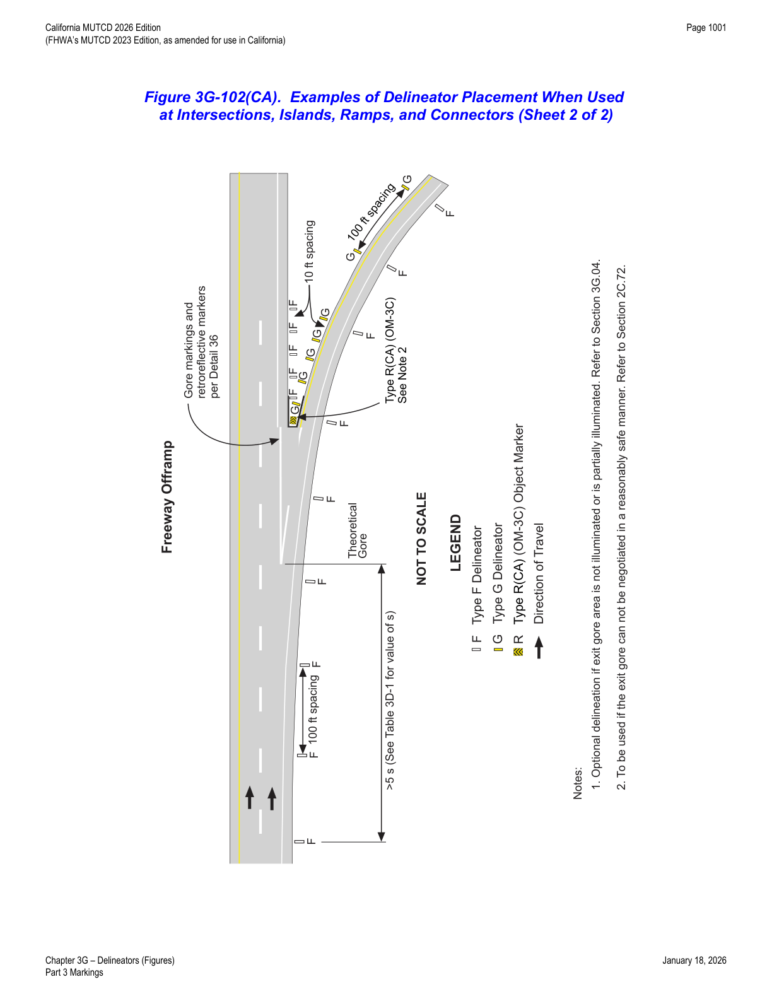
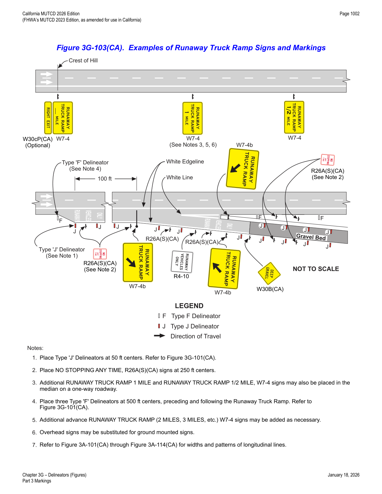
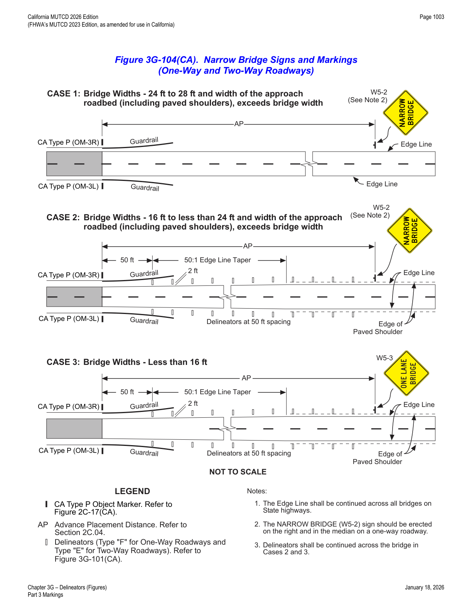
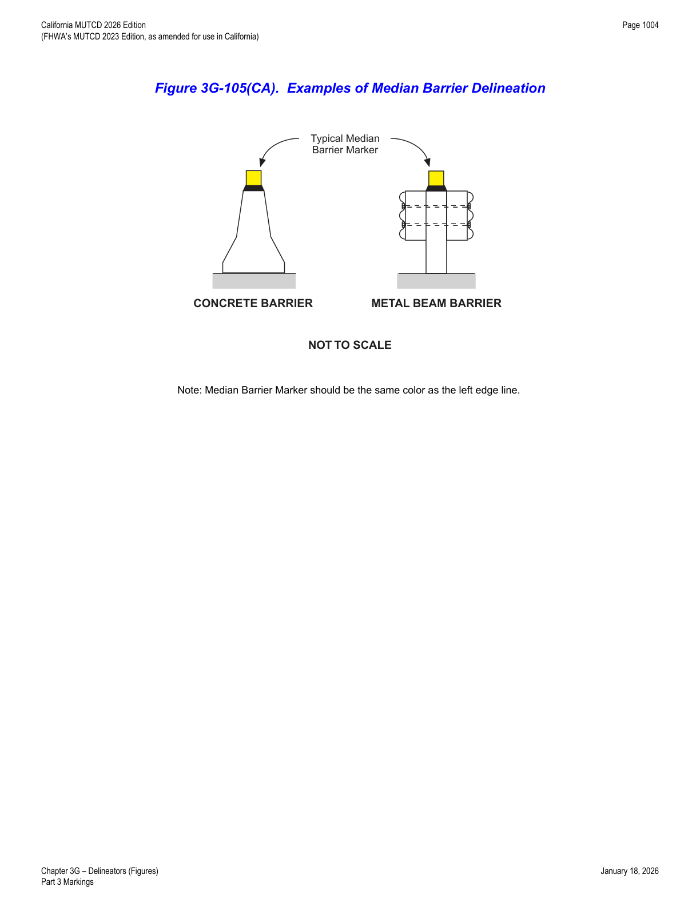

Part 3 · Markings · Chapter 3G
Delineators
Retroreflective guidance devices used to indicate roadway alignment at night and in adverse weather — design classes, color and application rules, placement/spacing formulas, and California-specific details for emergency passageways, narrow bridges, and median barriers.
3G.01General
- 01Delineators are particularly beneficial at locations where the alignment might be confusing or unexpected, such as at lane-reduction transitions and curves. Delineators are effective guidance devices at night and during adverse weather. An important advantage of delineators in certain locations is that they remain visible when the roadway is wet or covered by snow.
- 02Delineators are considered guidance devices to help road users navigate the roadway alignment, rather than warning devices.
- 03Delineators may be used on long continuous sections of highway or through short stretches where there are changes in horizontal alignment.
3G.02Design
- 01Delineators shall consist of retroreflective devices that are capable of clearly retroreflecting light under normal atmospheric conditions from a distance of 1,000 feet when illuminated by the high beams of standard automobile lights. They shall be mounted on crashworthy (see definition in Section 1C.02) supports.
- 02Retroreflective elements for delineators shall have a minimum vertical and horizontal dimension of 3 inches, or a minimum diameter dimension of 3 inches when circular.
- 03Within a series of delineators along a roadway, delineators for a given direction of travel at a specific location are referred to as single delineators if they have one retroreflective element for that direction, double delineators if they have two identical retroreflective elements for that direction mounted together, or vertically-elongated delineators if they have a single retroreflective element with an elongated vertical dimension to approximate the vertical dimension of two separate single delineators.
- 04A vertically-elongated delineator of appropriate size may be used in place of a double delineator.
- 05There are two classes of delineator posts and several types of retroreflectorization as shown in Figure 3G-101(CA).

In practice: Class 1 (flexible post) delineators are standard on State highways except in locations like snow or protected areas behind guardrail; Type designations (E, F, G, J) combine with post class (e.g., "E-1", "F-2") to fully specify a delineator.
3G.03Application
- 01The color of delineators shall comply with the color of edge lines stipulated in Sections 3A.03 and 3B.09.
- 02A series of single delineators shall be provided on the right-hand side of freeways and expressways and on at least one side of interchange ramps, except when either Condition A or Condition B is met, as follows: (A) on tangent sections of freeways and expressways when both of the following conditions are met: (1) raised pavement markers are used continuously on lane lines throughout all curves and on all tangents to supplement pavement markings, and (2) roadside delineators are used to lead into all curves; or (B) on sections of roadways where continuous lighting is in operation between interchanges.
- 03Delineators may be provided on other classes of roads.
- 04A series of single delineators may be provided on the left-hand side of roadways.
- 05Chevron Alignment (W1-8) signs may be used instead of or in addition to standard delineators, as provided in Section 2C.08.
- 06Delineators on the left-hand side of a two-way roadway shall be white (see Figure 3G-1).
- 07A series of single delineators should be provided on the outside of curves on interchange ramps.
- 08Where median crossovers are provided for official or emergency use on divided highways and where these crossovers are to be marked with pavement markings, a double yellow delineator should be placed on the left-hand side of the through roadway on the far side of the crossover for each roadway.
- 09Double or vertically-elongated delineators should be installed at approximately 100-foot intervals along acceleration and deceleration lanes.
- 10A series of delineators should be used wherever guardrail or other longitudinal barriers are present along a roadway or ramp.
- 11Red delineators may be used on the reverse side of any delineator where it would be viewed by a road user traveling in the wrong direction on that particular ramp or roadway.
- 12Except as provided in Paragraph 13 of Section 3B.12, delineators of the appropriate color should be used to indicate a lane-reduction transition where either an outside or inside lane merges into an adjacent lane.
- 13When used for lane-reduction transitions, the delineators should be installed adjacent to the lane or lanes reduced for the full length of the transition and should be so placed and spaced to show the reduction (see Section 3B.12 and Figure 3B-14(CA)).
- 14On a highway with continuous delineation on either or both sides, delineators should be carried through transitions.
- 15When used on a truck escape ramp, delineators shall be red.
- 16Red delineators should be placed on both sides of truck escape ramps.
- 17Where delineation is required within a paved area, surface mounted channelizers may be used. Refer to Section 3I.01.
- 18Examples of the use of delineators are shown in Figure 3G-101(CA). Color exceptions are shown in Figure 3G-103(CA) and 3G-104(CA).
- 19Following are typical delineators and their uses: (A) Type E - White Retroreflector (2 Sided) — for use on the left or right of 2-lane 2-way streets and highways when it is desirable to have a reflector on the front and one on the back of the delineator facing the opposite direction of traffic; (B) Type F - White Retroreflector (1 Sided) — for use on the right of freeways and expressways, and may also be used on 2-lane 2-way streets and highways when the Type E is not needed; (C) Type G - Yellow Retroreflector (1 Sided) — for use on the left of divided highways and 2-lane highway intersections as shown in Figure 3G-102(CA); (D) Type J - Red Retroreflector (1 Sided) — for placement on both sides of Truck Escape Ramps as shown in Figure 3G-103(CA).
- 20As shown in Figure 3G-102(CA) and Figure 3G-104(CA), Type K(CA), Type P(CA), and Type R(CA) Object Markers are used along with delineators. Refer to Figure 2C-17(CA) for object marker details.
- 21Bikeway separator posts are a type of delineator used as vertical elements to define Class IV bikeways. Refer to the FHWA "Separated Bike Lane Planning and Design Guide" for information on the design of bikeway separator posts. Refer to Sections 9E.07 and 9E.17.
3G.04Placement and Spacing
- 01Except as provided in Paragraph 2 of this Section, delineators should be mounted at a height, measured vertically from the bottom of the lowest retroreflective device to the elevation of the near edge of the roadway, of approximately 4 feet.
- 02When mounted on the face of or on top of guardrails or other longitudinal barriers, delineators may be mounted at a lower elevation than the normal delineator height recommended in Paragraph 1 of this Section.
- 03Delineators should be placed 2 to 8 feet outside the outer edge of the shoulder, or if appropriate, in line with the roadside barrier that is 8 feet or less outside the outer edge of the shoulder.
- 04Delineators should be placed at a constant distance from the edge of the roadway, except that where an obstruction intrudes into the space between the pavement edge and the extension of the line of the delineators, the delineators should be transitioned to be in line with or inside the innermost edge of the obstruction. If the obstruction is a guardrail or other longitudinal barrier, the delineators should be transitioned to be just behind, directly above (in line with), or on the innermost edge of the guardrail or longitudinal barrier.
- 05Delineators should not present a vertical or horizontal clearance obstacle for pedestrians.
- 06Delineators should be spaced 200 to 530 feet apart on mainline tangent sections. Delineators should be spaced 100 to 200 feet apart on ramp tangent sections.
- 07On a highway with continuous delineation on either or both sides, the spacing between a series of delineators may be closer.
- 08When uniform spacing is interrupted by such features as driveways and intersections, delineators which would ordinarily be located within the features may be relocated in either direction for a distance not exceeding ¼ of the uniform spacing. Delineators still falling within such features may be eliminated.
- 09Delineators may be transitioned in advance of a lane transition or obstruction as a guide for oncoming traffic.
- 10The spacing of delineators should be adjusted on approaches to and throughout horizontal curves so that several delineators are always simultaneously visible to the road user. The approximate spacing shown in Table 3G-1 should be used.
- 11The spacing between red delineators that are placed on both sides of a truck escape ramp should not exceed 50 feet for a distance that is sufficient to identify the ramp entrance. The spacing between red delineators that are placed beyond the ramp entrance should be such that adequate guidance is provided based on the length and design of the escape ramp.
- 12When needed for special conditions, delineators of the appropriate color may be mounted in a closely-spaced manner on the face of or on top of guardrails or other longitudinal barriers to form a continuous or nearly-continuous "ribbon" of delineation.
- 13Examples of delineator installations are shown in Figure 3G-1.
- 14If used on the State Highway System, delineators should be placed as follows: (A) on the outsides of highway curves of 3,000 feet radius or less (including medians in divided highways), freeway exit and entrance ramps and connectors — except where a median barrier is delineated as shown in the Median Barrier Delineation Detail in Figure 3G-105(CA); delineator spacing on curves is shown in Figure 3G-1 and Table 3G-1; (B) on the right of tangent sections of freeway entrance and exit ramps, collector roads, freeway connectors and lane reduction transition sections at 200 feet spacing; (C) on embankments higher than 10 feet and with side slopes steeper than 4:1, with tangent-section spacing of approximately 525 feet (for curves, refer to Figure 3G-1 and Table 3G-1); (D) on approaches to narrow bridges as shown in Figure 3G-104(CA); (E) on tangent sections of rural State highways where there are no reflective pavement markers, such as in snow areas, with delineator spacing of approximately 525 feet; and (F) on all new guardrail or bridge rail installations, or when maintenance is required on existing guardrail or bridge rail, within 12 feet of the edge of traveled way and curves of 3,000 feet radius or less, with tangent-section spacing of approximately 525 feet (for curves, refer to Figure 3G-1 and Table 3G-1).
- 15Delineators may also be placed as follows: (A) at intersections, road approaches, and median openings, as shown in Figure 3G-102(CA); (B) on sections of highway with non-standard shoulder width.
- 16If the exit gore at an interchange is not illuminated or is partially illuminated, delineators may be placed as shown in Figure 3G-102(CA) per the following details: (A) Type F - White Retroreflectors (1 Sided) on the right side, beginning at a distance greater than 5S from the theoretical gore point at 100 feet spacing; (B) Type G - Yellow Retroreflectors (1 Sided) on the left side of the exit at 10 feet spacing and then shifting to 100 feet spacing; (C) Type F - White Retroreflectors (1 Sided) on the right side of the mainline, downstream of the exit at 10 feet spacing.
- 17Refer to Table 3G-1 for the formula to calculate the value of S.

| Radius (R) of Curve | Approximate Spacing (S) on Curve |
|---|---|
| 50 feet | 20 feet |
| 115 feet | 25 feet |
| 180 feet | 35 feet |
| 250 feet | 40 feet |
| 300 feet | 50 feet |
| 400 feet | 55 feet |
| 500 feet | 65 feet |
| 600 feet | 70 feet |
| 700 feet | 75 feet |
| 800 feet | 80 feet |
| 900 feet | 85 feet |
| 1,000 feet | 90 feet |
Notes to Table 3G-1: (1) spacing for specific radii may be interpolated from the table; (2) the minimum spacing should be 20 feet; (3) the spacing on curves should not exceed 300 feet; (4) in advance of or beyond a curve, proceeding away from the end of the curve, the spacing of the first delineator is 2S, the second 3S, and the third 6S, but not to exceed 300 feet; (5) S refers to the delineator spacing for specific radii, computed from the formula S = 3√(R−50); (6) the distances for S shown above were rounded to the nearest 5 feet.
In practice: the source table shows a set of overlaid annotation figures ("40 feet") beside the 300-to-600-foot radius rows that do not match the stated S = 3√(R−50) formula and appear to be a leftover markup/redline artifact rather than an intended replacement value — the transcription above uses the values consistent with the documented formula and with the neighboring rows' progression.


3G.101(CA)Emergency Passageway Marker
- 01Except for emergency passageways in median barriers, median openings are not allowed on freeways.
- 02Where freeway median passageways are provided for emergency vehicles, delineation for the crossover should be as follows: (A) at a point 1/5 mile in advance of the crossover, one Class 1 Delineator, with a yellow post and two 3 x 12 inch white retroreflectors stacked vertically (24 inches of white retroreflectance total), should be placed on the left side of the through roadway facing approaching traffic; (B) at a point 1/10 mile in advance of the crossover, one Class 1 Delineator, with a yellow post and two 3 x 12 inch yellow retroreflectors stacked vertically, should be placed on the left side as in (A); (C) at the far side of the crossover, one Class 1 Delineator, with a yellow post and one 3 x 12 inch white retroreflector over one 3 x 12 inch yellow retroreflector stacked vertically, should be placed on the left side as in (A).
3G.102(CA)Narrow Bridge Signing and Marking
- 01The placement of warning signs, object markers, delineators, and edge lines at narrow bridges is dependent upon the width of the bridge and approach roadway.
- 02Narrow bridge signing and marking shall conform to the details shown in Figure 3G-104(CA).


3G.103(CA)Median Barrier Delineation
- 01Median barriers should be delineated when the clearance between the barrier and the edge of traveled way is less than 8 feet.
- 02In general, when delineated, it should be with an approved median barrier marker, the same color as the left edge line. They should be placed on top of the barrier at 48-foot centers.
- 03Markers placed on the sides of barriers, near the splash zone, should be avoided because of the tendency to collect dirt which reduces their effectiveness. Refer to Figure 3G-105(CA).

★ Key Takeaways — Chapter 3G
- Delineators must retroreflect visibly from 1,000 feet under high beams, with retroreflective elements at least 3 inches in vertical/horizontal dimension (or diameter), mounted on crashworthy supports; colors follow the edge-line color they parallel (white on the left of two-way roads; red required on truck escape ramps).
- Four retroreflector types are defined: E (white, 2-sided, 2-lane 2-way roads), F (white, 1-sided, freeways/expressways), G (yellow, 1-sided, left side of divided highways), and J (red, 1-sided, truck escape ramps).
- Standard mounting height is approximately 4 feet; lateral placement is 2 to 8 feet outside the shoulder edge; mainline tangent spacing is 200-530 feet, ramp tangent spacing is 100-200 feet, and curve spacing follows Table 3G-1's formula S = 3√(R−50), capped at 300 feet and floored at 20 feet.
- California-specific provisions cover emergency median passageway markers (staged at 1/5 mile and 1/10 mile with specific retroreflector color/size combinations), narrow bridge signing keyed to three bridge-width cases, runaway truck ramp delineation (Type J at 50-foot centers), and median barrier markers at 48-foot centers when clearance is under 8 feet.